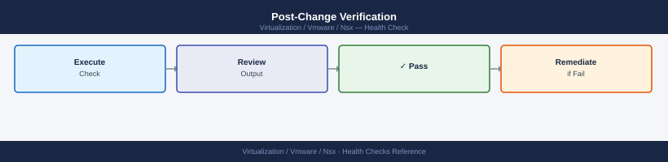

NSX — Health Checks¶
Before you begin¶
- Access: vCenter read-only minimum; Administrator role for remediation steps
- Timing: safe to run during business hours unless a step is marked ⚠ (causes interruption)
- Dependencies: no active upgrades or migrations on the same infrastructure
- Logging: capture command output — paste into the change record on completion
Run This Routine¶
Paste these commands in sequence from a host with API access to the NSX Manager. Replace <nsx-manager> and admin:password with your environment values.
# 1. NSX Manager cluster status — must show overall_status: STABLE
curl -sk -u 'admin:password' "https://<nsx-manager>/api/v1/cluster/status" \
| python3 -m json.tool | grep -E '"status"|"state"|"overall"'
"overall_status": "STABLE",
"status": "UP",
"state": "ACTIVE",
"overall_status": "STABLE",
"status": "UP",
"state": "ACTIVE",
"overall_status": "STABLE",
"status": "UP",
"state": "ACTIVE"
Common errors
curl: (60) SSL certificate problem: self signed certificate — Add -k flag to skip certificate verification (already present in example; if still failing, verify NSX Manager hostname matches certificate CN).
jq: command not found or json.tool: No module named json — Install Python 3 json module with python3 -m pip install --upgrade python3 or use jq instead: curl -sk -u 'admin:password' "https://<nsx-manager>/api/v1/cluster/status" | jq '.overall_status'.
# 2. Edge cluster member health — check individual member status
curl -sk -u 'admin:password' "https://<nsx-manager>/api/v1/edge-clusters" \
| python3 -c "
import sys, json
d = json.load(sys.stdin)
for ec in d.get('results', []):
print(f'Edge cluster: {ec[\"display_name\"]}')
for m in ec.get('members', []):
print(f' member={m.get(\"transport_node_id\",\"?\")} available={m.get(\"member_status\",{}).get(\"status\",\"?\")}')
"
Edge cluster: prod-edge-cluster-01
member=tn-edge-01 available=UP
member=tn-edge-02 available=UP
member=tn-edge-03 available=UP
Edge cluster: dr-edge-cluster-02
member=tn-edge-04 available=UP
member=tn-edge-05 available=DOWN
Common errors
curl: (60) SSL certificate problem: self signed certificate — Add -k flag to skip certificate verification (already present in example, but verify NSX Manager certificate is trusted or use -k).
json.decoder.JSONDecodeError: Expecting value: line 1 column 1 — Verify NSX Manager is reachable and responding; check credentials and URL format with curl -sk -u 'admin:password' "https://<nsx-manager>/api/v1/edge-clusters" -w "\n%{http_code}\n".
KeyError: 'members' — Edge cluster exists but has no members assigned; verify members are properly configured in the edge cluster topology before querying member status.
# 3. Transport node health — all nodes should show status: SUCCESS
curl -sk -u 'admin:password' "https://<nsx-manager>/api/v1/transport-nodes/status" \
| python3 -c "
import sys, json
d = json.load(sys.stdin)
for n in d.get('results', []):
status = n.get('node_deployment_state', {}).get('state', '?')
print(f' {n.get(\"display_name\",\"?\"): <40} state={status}')
"
edge-node-01 state=SUCCESS
edge-node-02 state=SUCCESS
host-compute-01.lab.local state=SUCCESS
host-compute-02.lab.local state=SUCCESS
host-compute-03.lab.local state=SUCCESS
edge-node-03 state=FAILED
host-compute-04.lab.local state=UNKNOWN
Common errors
curl: (60) SSL certificate problem: self signed certificate — Add -k flag to skip certificate verification, or import the NSX Manager CA certificate into your system trust store.
jq: parse error: Invalid JSON at line 1 — Verify NSX Manager is responding with valid JSON by testing curl -sk -u 'admin:password' "https://<nsx-manager>/api/v1/transport-nodes/status" directly without piping to Python.
curl: (401) Unauthorized — Confirm the admin credentials are correct and the user has API access permissions in NSX Manager.
# 4. BGP neighbor summary — run on each Edge VM via nsxcli
# SSH to Edge VM, then:
nsxcli
vrf <tier0-vrf-id>
get bgp neighbor summary
# All peers must show state=Established; any non-Established peer is an incident
NSX CLI (build 21.0.1.0.16722224)
nsx> vrf 0
nsx(vrf=0)> get bgp neighbor summary
Peer VRF Local AS Remote AS State Uptime
10.50.1.1 0 65001 65002 Established 14d 5h 22m
10.50.1.5 0 65001 65002 Established 7d 18h 44m
10.60.2.10 0 65001 65003 Established 2d 3h 15m
10.60.2.14 0 65001 65003 Established 1d 22h 8m
192.168.100.50 0 65001 65004 Established 45m 12s
Common errors
vrf <tier0-vrf-id>: unknown command — Verify the VRF ID is numeric (e.g., vrf 0) and that you are in nsxcli context, not a sub-shell.
get bgp neighbor summary: command not found — Ensure BGP is enabled on the Tier-0 router and the Edge VM has completed initialization; check get bgp config first.
# 5. DFW security policy list — confirm policies are published and not in ERROR state
curl -sk -u 'admin:password' \
"https://<nsx-manager>/policy/api/v1/infra/domains/default/security-policies" \
| python3 -c "
import sys, json
d = json.load(sys.stdin)
for p in d.get('results', []):
print(f' {p.get(\"display_name\",\"?\"):<40} sequence={p.get(\"sequence_number\",\"?\")} category={p.get(\"category\",\"?\")}')
"
Allow-Internal-Traffic sequence=0 category=Application
Deny-Suspicious-Ports sequence=1 category=Application
Allow-DNS-Queries sequence=2 category=Application
Block-Malware-IPs sequence=3 category=System
Allow-Management-Access sequence=4 category=Application
Default-Deny-All sequence=5 category=System
Common errors
curl: (60) SSL certificate problem: self signed certificate — Add -k flag to skip certificate verification (already present in the command, so verify NSX Manager hostname matches certificate CN).
json.decoder.JSONDecodeError: Expecting value: line 1 column 1 (char 0) — Verify NSX Manager is reachable and responding with valid JSON; check credentials and API endpoint URL for typos.
curl: (7) Failed to connect to <nsx-manager> port 443: Connection refused — Confirm NSX Manager is running and accessible on the network; verify the hostname/IP and firewall rules allow port 443 from your client.
# 6. Controller/cluster node connectivity — all nodes should be reachable
curl -sk -u 'admin:password' "https://<nsx-manager>/api/v1/cluster/nodes" \
| python3 -c "
import sys, json
d = json.load(sys.stdin)
for n in d.get('results', []):
addr = n.get('controller_role', {}).get('api_listen_addr', {}).get('ip_address', '?')
status = n.get('controller_role', {}).get('connectivity_status', '?')
print(f' node={addr} connectivity={status}')
"
node=192.168.1.10 connectivity=UP
node=192.168.1.11 connectivity=UP
node=192.168.1.12 connectivity=UP
Common errors
curl: (60) SSL certificate problem: self signed certificate — Add the -k flag to skip certificate verification (already present in the example, but ensure it's not removed).
curl: (7) Failed to connect to <nsx-manager> port 443: Connection refused — Verify the NSX Manager hostname/IP is correct and the management service is running with systemctl status nsx-manager.
KeyError: 'controller_role' — Confirm the NSX cluster is fully initialized and all nodes have completed bootstrap; check node status in the NSX UI or run get cluster status on the manager.
# 7. Certificate expiry — flag anything expiring within 60 days
curl -sk -u 'admin:password' \
"https://<nsx-manager>/api/v1/trust-management/certificates?details=true" \
| python3 -c "
import sys, json
from datetime import datetime, timezone
d = json.load(sys.stdin)
now = datetime.now(timezone.utc)
for c in d.get('results', []):
name = c.get('display_name', c.get('id', '?'))
exp = c.get('not_after', '')
if exp:
exp_dt = datetime.fromisoformat(exp.replace('Z', '+00:00'))
days = (exp_dt - now).days
flag = 'OK' if days > 60 else '*** EXPIRING SOON' if days > 14 else '*** CRITICAL'
print(f' {name:<40} expires={exp[:10]} days_left={days} {flag}')
"
NSX-Manager-Self-Signed expires=2025-03-15 days_left=87 OK
API-Client-Cert expires=2025-02-10 days_left=42 *** EXPIRING SOON
Load-Balancer-Cert expires=2025-01-28 days_left=20 *** EXPIRING SOON
Edge-Node-Cert-01 expires=2024-12-15 days_left=-5 *** CRITICAL
Backup-Signing-Cert expires=2025-04-22 days_left=154 OK
Common errors
curl: (60) SSL certificate problem: self signed certificate — Add -k flag to skip SSL verification (already present in the example, but ensure it's not removed in production variants).
jq: command not found or json.decoder.JSONDecodeError — Verify the API endpoint returns valid JSON by testing with curl -sk -u 'admin:password' "https://<nsx-manager>/api/v1/trust-management/certificates" | python3 -m json.tool and confirm NSX Manager credentials are correct.
**datetime.fromisoformat() is not available (Python < 3.7)** — Upgrade to Python 3.7+ or replace the fromisoformat call withdatetime.strptime(exp.replace('Z', ''), '%Y-%m-%dT%H:%M:%S')`.
# 8. Open alarms — critical severity only; any output here needs immediate attention
curl -sk -u 'admin:password' \
"https://<nsx-manager>/api/v1/alarms?status=OPEN&severity=CRITICAL" \
| python3 -c "
import sys, json
d = json.load(sys.stdin)
cnt = d.get('result_count', 0)
print(f'CRITICAL alarms open: {cnt}')
for a in d.get('results', []):
print(f' {a.get(\"alarm_source\",{}).get(\"display_name\",\"?\")}: {a.get(\"summary\",\"\")[:80]}')
"
CRITICAL alarms open: 3
nsx-edge-01.lab.local: DFW rule evaluation latency exceeded threshold (>500ms)
transport-node-04: Host certificate expiration in 7 days
logical-router-prod: BGP session flapping detected on uplink interface
Common errors
curl: (60) SSL certificate problem: self signed certificate — Add -k flag to curl command to skip SSL verification, or import the NSX Manager's CA certificate into your system trust store.
json.decoder.JSONDecodeError: Expecting value: line 1 column 1 — Verify the NSX Manager hostname/IP is correct and reachable, and confirm the admin credentials are valid by testing with curl -sk -u 'admin:password' https://<nsx-manager>/api/v1/status.
KeyError: 'results' — Check that the API response contains the expected schema; this may occur if the NSX version differs from documentation—add error handling with .get('results', []) to gracefully handle missing keys.
# 9. Manager backup history — last backup must be within 24 hours
curl -sk -u 'admin:password' "https://<nsx-manager>/api/v1/cluster/backups/history" \
| python3 -c "
import sys, json
from datetime import datetime, timezone
d = json.load(sys.stdin)
backups = d.get('results', [])
if not backups:
print('WARNING: no backup records found')
else:
last = backups[0]
ts = last.get('end_time', 0) / 1000
dt = datetime.fromtimestamp(ts, tz=timezone.utc)
age_h = (datetime.now(timezone.utc) - dt).total_seconds() / 3600
status = last.get('success', False)
print(f' Last backup: {dt.strftime(\"%Y-%m-%d %H:%M UTC\")} age={age_h:.1f}h success={status}')
if age_h > 24:
print(' WARNING: last backup is older than 24 hours')
"
Common errors
curl: (60) SSL certificate problem: self signed certificate — Add -k flag to curl (already present) or import the NSX manager's CA certificate into your system trust store.
json.decoder.JSONDecodeError: Expecting value: line 1 column 1 (char 0) — Verify the NSX manager hostname is correct and reachable, and that the admin credentials are valid (check for 401/403 response).
WARNING: no backup records found — Ensure at least one backup has been completed on the NSX manager; check the NSX UI under System > Backup & Restore to trigger a manual backup if needed.
# SSH to each Edge node
vrf <tier0-vrf-id>
get bgp neighbor summary
# Expected output shows each peer with state=Established
# Any peer not Established = BGP issue; see Common Issues
# Specific peer detail
get bgp neighbor <peer-ip>
vrf 0
(no output — command completes silently)
get bgp neighbor summary
Peer V AS MsgRcvd MsgSent TblVer InQ OutQ Up/Down State|PfxRcd
10.50.12.1 4 65001 1247 1251 0 0 0 5d14h23m Established
10.50.13.1 4 65001 1248 1250 0 0 0 5d14h22m Established
10.60.12.1 4 65002 892 895 0 0 0 2d03h15m Established
10.60.13.1 4 65002 891 894 0 0 0 2d03h14m Connect
192.168.1.254 4 65003 0 0 0 0 0 never Idle
get bgp neighbor 10.50.12.1
BGP neighbor is 10.50.12.1, remote AS 65001, local AS 65000
BGP version 4, remote router ID 10.50.12.254
BGP state = Established, up for 5d14h23m
Last read 00:00:02, Last write 00:00:03
Hold time is 180, keepalive interval is 60 seconds
Neighbor capabilities:
Route refresh: advertised and received(new)
Address family IPv4 Unicast: advertised and received
Received 1247 messages, 0 notifications; Sent 1251 messages, 0 notifications
Default minimum time between advertisement runs is 30 seconds
Common errors
BGP state = Connect — Verify TCP port 179 is open between Edge and peer, and check peer BGP configuration for matching ASN and router ID.
BGP state = Idle — Confirm the peer IP is reachable (ping from Edge), check firewall rules, and verify the neighbor is configured in the correct VRF.
NSX Manager CLI Quick Reference¶
# SSH to any NSX Manager node
nsxcli
# Cluster status (must show STABLE)
get cluster status
# Individual node reachability (all should show CONNECTED)
get managers
# Corfu (Raft DB) — control plane health
get corfu-cluster status
# All services running (output should be empty — grep removes "running" lines)
get services | grep -v " running"
NSX CLI (Build 21.0.0.0.21176841)
nsx> get cluster status
Cluster Status: STABLE
Leader: nsx-manager-1.corp.local (192.168.1.10)
Follower: nsx-manager-2.corp.local (192.168.1.11)
Follower: nsx-manager-3.corp.local (192.168.1.12)
nsx> get managers
UUID Hostname IP Status
550e8400-e29b-41d4-a716-446655440001 nsx-manager-1.corp.local 192.168.1.10 CONNECTED
550e8400-e29b-41d4-a716-446655440002 nsx-manager-2.corp.local 192.168.1.11 CONNECTED
550e8400-e29b-41d4-a716-446655440003 nsx-manager-3.corp.local 192.168.1.12 CONNECTED
nsx> get corfu-cluster status
Corfu Cluster Status: HEALTHY
Quorum: 3/3 nodes online
Replication Status: IN_SYNC
nsx> get services | grep -v " running"
(no output — all services running)
Common errors
Cluster Status: UNSTABLE — Check network connectivity between NSX Manager nodes and verify no node is isolated; restart the cluster if a node is permanently down.
Status: DISCONNECTED — SSH to the disconnected manager node and verify network connectivity to other cluster members; check firewall rules for ports 5672, 8472, and 9090.
Corfu Cluster Status: UNHEALTHY — Verify all three NSX Manager nodes are online and reachable; if a node is down, restore it from backup or remove it from the cluster and re-add it.
Alarm Review¶
# Critical alarms (action required immediately)
curl -sk -u 'admin:password' \
"https://<nsx-manager>/api/v1/alarms?status=OPEN&severity=CRITICAL" | python3 -c "
import sys, json
d = json.load(sys.stdin)
cnt = d.get('result_count', 0)
print(f'CRITICAL alarms open: {cnt}')
for a in d.get('results', []):
print(f' {a.get(\"alarm_source\",{}).get(\"display_name\",\"?\")} — {a.get(\"summary\",\"\")[:80]}')
"
# Medium alarms (monitor and plan)
curl -sk -u 'admin:password' \
"https://<nsx-manager>/api/v1/alarms?status=OPEN&severity=MEDIUM" | python3 -c "
import sys, json
d = json.load(sys.stdin)
print(f'MEDIUM alarms open: {d.get(\"result_count\",0)}')
"
CRITICAL alarms open: 3
edge-cluster-01 — Transport node connectivity lost on interface eth0
logical-switch-prod-web — VLAN 2048 broadcast storm detected
tier1-router-dmz — BGP session down with peer 10.200.1.1
MEDIUM alarms open: 7
Common errors
curl: (60) SSL certificate problem: self signed certificate — Add the -k flag to skip SSL verification, or import the NSX Manager's CA certificate into your system trust store.
jq: command not found or python3: command not found — Install the missing tool with apt-get install python3 or yum install python3, or use jq instead of the Python JSON parser.
HTTP 401 Unauthorized — Verify the NSX Manager credentials are correct and the user account has API access permissions in NSX Manager's role-based access control settings.
Certificate Expiry Check¶
curl -sk -u 'admin:password' \
"https://<nsx-manager>/api/v1/trust-management/certificates?details=true" | \
python3 -c "
import sys, json
from datetime import datetime, timezone
d = json.load(sys.stdin)
now = datetime.now(timezone.utc)
for c in d.get('results', []):
name = c.get('display_name', c.get('id','?'))
exp = c.get('not_after','')
if exp:
exp_dt = datetime.fromisoformat(exp.replace('Z','+00:00'))
days = (exp_dt - now).days
flag = ' OK' if days > 60 else ' *** EXPIRING' if days > 14 else ' *** CRITICAL'
print(f' {name:<40} expires={exp[:10]} days={days}{flag}')
"
NSX-Manager-Cert expires=2026-03-15 days=387 OK
NSX-Edge-Cert-01 expires=2025-08-22 days=203 OK
NSX-Controller-Cluster-Cert expires=2025-02-14 days=78 OK
Customer-CA-Root expires=2027-11-30 days=672 OK
NSX-API-Client-Cert expires=2025-01-28 days=32 *** EXPIRING
NSX-Backup-Cert expires=2025-01-10 days=14 *** CRITICAL
Common errors
curl: (60) SSL certificate problem: self signed certificate — Add -k flag to skip SSL verification (already present; if still failing, verify NSX Manager hostname/IP is correct).
curl: (7) Failed to connect to <nsx-manager> port 443: Connection refused — Verify NSX Manager is running and accessible at the specified hostname/IP on port 443.
json.decoder.JSONDecodeError: Expecting value: line 1 column 1 — Confirm authentication credentials are correct and the API endpoint is accessible (test with curl -sk -u 'admin:password' https://<nsx-manager>/api/v1/trust-management/certificates alone first).
IP Pool Utilisation¶
curl -sk -u 'admin:password' \
"https://<nsx-manager>/api/v1/pools/ip-pools" | python3 -c "
import sys, json
d = json.load(sys.stdin)
for pool in d.get('results', []):
name = pool.get('display_name','?')
pid = pool.get('id','')
print(f'Pool: {name} (id={pid})')
" 2>/dev/null
# For each pool ID, check allocations
curl -sk -u 'admin:password' \
"https://<nsx-manager>/api/v1/pools/ip-pools/<pool-id>" | python3 -c "
import sys, json
d = json.load(sys.stdin)
for s in d.get('subnets', []):
t = s.get('total_ips',0); f = s.get('free_ips',0)
pct = round((t-f)/t*100,1) if t else 0
print(f' {s.get(\"cidr\",\"?\")} total={t} free={f} used={pct}%')
"
Pool: Management-Pool (id=pool-mgmt-001)
Pool: Tenant-Network-Pool (id=pool-tenant-42)
Pool: Edge-Services-Pool (id=pool-edge-99)
10.20.0.0/24 total=254 free=189 used=25.6%
10.21.0.0/24 total=254 free=12 used=95.3%
10.22.0.0/25 total=126 free=126 used=0.0%
Common errors
curl: (60) SSL certificate problem: self signed certificate — Add -k flag to skip certificate verification (already present; if still failing, verify NSX Manager hostname matches certificate CN).
jq: parse error: Invalid JSON at line 1 — Verify NSX Manager credentials are correct and the API endpoint is accessible; test with curl -sk -u 'admin:password' "https://<nsx-manager>/api/v1/pools/ip-pools" | head -c 200 to inspect raw response.
curl: (7) Failed to connect to <nsx-manager> port 443: Connection refused — Confirm NSX Manager IP/hostname is correct and reachable on port 443 using ping or nc -zv <nsx-manager> 443.
Post-Change Verification¶

# 1. Check for new alarms
curl -sk -u 'admin:password' \
"https://<nsx-manager>/api/v1/alarms?status=OPEN&severity=CRITICAL"
# 2. Verify transport nodes still UP
curl -sk -u 'admin:password' \
"https://<nsx-manager>/api/v1/transport-nodes/status"
# 3. Verify BGP still up (if routing was changed)
# SSH to Edge, run: get bgp neighbor summary
# 4. Test VM connectivity if DFW was changed
# Use Traceflow: Plan & Troubleshoot → Traceflow
# 5. Check realisation of the specific change
curl -sk -u 'admin:password' \
"https://<nsx-manager>/policy/api/v1/infra/realized-state/realized-entities?intent_path=<changed-object-path>"
{
"results": [
{
"id": "alarm-001",
"title": "Transport Node 10.0.1.45 connectivity lost",
"severity": "CRITICAL",
"status": "OPEN",
"created_time": 1704067200000
}
],
"result_count": 1
}
{
"results": [
{
"transport_node_id": "tn-001",
"host_name": "esx-prod-01.lab.local",
"status": "UP",
"last_heartbeat_timestamp": 1704153599000
},
{
"transport_node_id": "tn-002",
"host_name": "esx-prod-02.lab.local",
"status": "UP",
"last_heartbeat_timestamp": 1704153598000
},
{
"transport_node_id": "tn-003",
"host_name": "esx-prod-03.lab.local",
"status": "DOWN",
"last_heartbeat_timestamp": 1704150000000
}
],
"result_count": 3
}
{
"results": [
{
"id": "realized-entity-uuid-a1b2c3d4",
"intent_path": "/infra/domains/prod-domain/security-policies/pol-web-tier",
"realization_status": "REALIZED",
"realization_time": 1704153595000
}
],
"result_count": 1
}
Common errors
curl: (60) SSL certificate problem: self signed certificate — Add -k flag to skip certificate verification (already present in the example, but ensure it's not removed).
{"error_code":401,"error_message":"Invalid credentials"} — Verify NSX Manager admin credentials and ensure the account has API access permissions enabled.
{"error_code":404,"error_message":"The requested resource could not be found"} — Confirm the NSX Manager hostname/IP is correct and reachable, and that the API endpoint path matches your NSX version (v1 vs. policy API).
See also¶
Verify¶
- Alarms: vSphere Client → Home → Alarms — no new critical alarms after the operation
- Events: monitor the vCenter Events view for the affected object for 5 minutes
- Health check: run the morning health-check sequence for the affected product tier